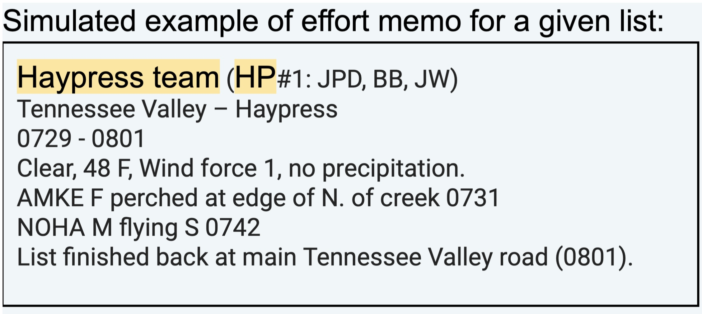
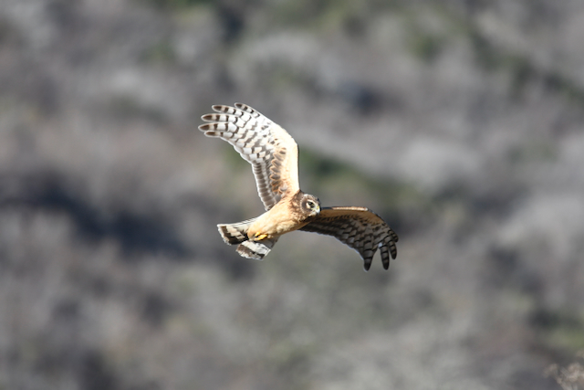

eBirdCBC field protocol
Protocol for eBirding a CBC!
eBirdCBC uses eBird and eBird tracks to record all bird and participant data, automating the summary of territory counts for the Christmas Bird Count (CBC). This is combined with eBird mobile and manual data collection throughout the day, including capturing effort details and sightings of raptors and large birds.
Before the count
- Familiarize yourself with this protocol.
- Get your team assignment from your area leader.
- Practice by birding in your assigned area during count-week the 3 days before or after your CBC if you can.
- Ensure you have eBird Mobile working, Bring a spare battery for your phone, print out data forms provided by your area leader, prepare for a long-day birding.
Field protocol: eBird lists & tracks
For a given team, designate a team member to use eBird mobile to track team location and log birds using one of the following methods:
- Activate eBird starting a new list enabling eBird tracks.
- Tally birds at the same time on the app.
- -or put your phone in your pocket and-
- Write the date, time, location & each bird encountered on paper and transfer to eBird mobile ASAP. See this convenient PDF form for the latter.
- Tally birds at the same time on the app.
- Either way, eBird Mobile tracks allow us to divide observations by route for us to automatically compile in eBird.
Keeping track of the effort and bird details by hand
Designate a second member as a ‘back-up’ to log participants, effort, raptors & large flyover birds, and rare bird notes on paper to later transcribe the following into the eBird memo:
- Team name and list number (i.e. Haypress #1).
- The name (initials) of each participant.
- Exact start and stop times & locations for each list (sometimes eBird tracks fail).
- Note the weather: cloud cover, temperature, wind (Beaufort scale) & precipitation (none, trace, light, medium, heavy).


With raptors and other large mobile birds it is crucial to track for accurate counts and movement patterns:
- Record species, time, location, flight direction, age, sex, plumage, behavior, and other details.
- Use a paper tally sheet to ensure data consistency.
- Add this information to species comments in eBird after the count.
- These data help prevent double-counting across subareas and are required by CBC compilers.
Example Table for Raptors and Large Birds
| Species | Location | Time | Flight direction | Age | Sex | Plumage | Notes |
| Golden Eagle | M-ranch entry road | 0915 | NE | Adult | NA | NA | This bird was flying high and fast. |
| Northern Harrier | M-ranch entry road | 0920 | N | Adult | Male | NA | Harrying low flying into the Yellow territory |
It is really important to:
- Switch eBird lists and by-hand effort notes at the same time throughout the day for each different assigned route/list area.
- Create a new list even when you are returning across your or another team’s route/polygon.
- Start a new eBird list with new metadata for any changes in team membership.
- eBird lists will help us keep track of birds AND CBC effort data: total party miles (one-way distance) and total party hours (nearest minute).
- Document Rare Birds and put this documentation on paper and into your eBird lists: tips for documenting unusual observations. Also you can print up downloadable rare bird forms.
- Photographs: Photos and/or audio recordings of diagnostic vocalizations are the best evidence of a rare bird. Photos are preferably of good quality showing diagnostic features.
After the count:
- Upload and Share: Last but not least–after your eBird lists are all set and uploaded to eBird, share them with your area leader’s ‘area persona’ (the eBird username that the area leader uses to aggregate all the day’s lists) using the share function either from eBird mobile, or from the your eBird list on the web interface. If they ask you to correct something, do so and RESHARE back to their eBird persona.
Reminders: Do’s, Hints, Tips & tricks, Don’ts
- Each team covers their assigned route/polygon starting at sunrise early in the day. If you then traverse another team’s area, or a part of it, start a new list following their area/list assignments.
- Create a new eBird list for each location your area leader suggests, such as for each unique habitat within your ‘birdshed’ or count area along your route or polygon, with eBird tracks enabled. This serves as the foundation for both bird observations and CBC effort data (see below for hints on manual data collection).
- For large areas or polygons, don’t be afraid to create multiple lists, especially when transitioning between habitats or exiting a ‘birdshed’ where larger birds can no longer be tracked.
- Transcribe eBird data and manual effort notes into eBird list comments. Put raptor details into the species comments.
- When crossing into other teams’ polygons, create separate eBird lists to collect replicate eBird data. These data will be compared and we will use the high counts (e.g. =MAX) for overlapping stationary birds.
- Record birds seen between polygons in the species comments with relevant details.
- When retracing your steps, don’t just count ‘new’ birds, make a complete list and let the MAX-SUM algorithm do the work of figuring out new birds and high-counts.
- Do not include birds seen by people outside your CBC party unless you see them too!
© 2015-2024 Durrell D. Kapan